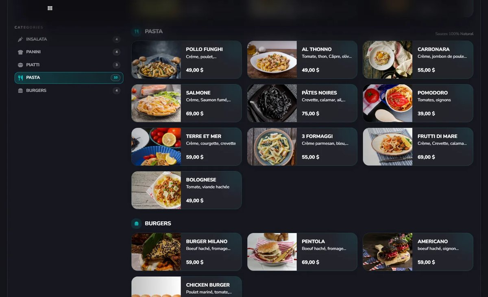
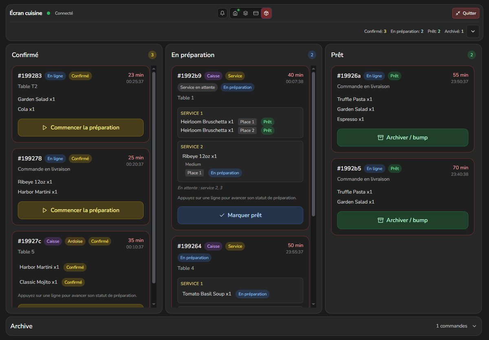
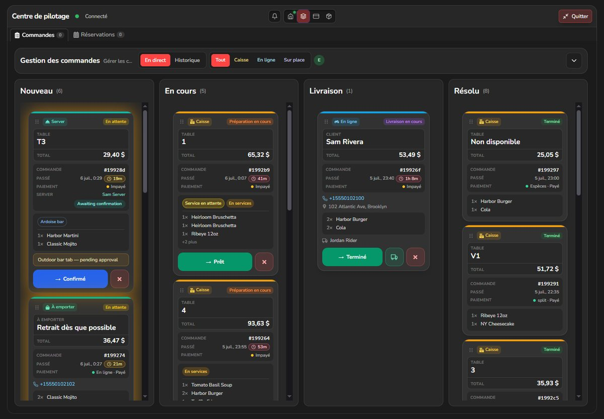

Flick
Modern POS and online ordering for venues that refuse six disconnected tools.
Flick is a cloud hospitality platform I built and shipped: live digital menus and QR for guests, a real POS with checkout, ticketed events, kitchen display, and one control plane for orders, reservations, tables, and staff.
- Guest app — map discovery, live menus, order & reserve
- Operator POS — in-venue selling, KDS, multi-location control
- QR in-house, online ordering, events & tickets
- AI menu import, stock, recipes, roles, analytics


